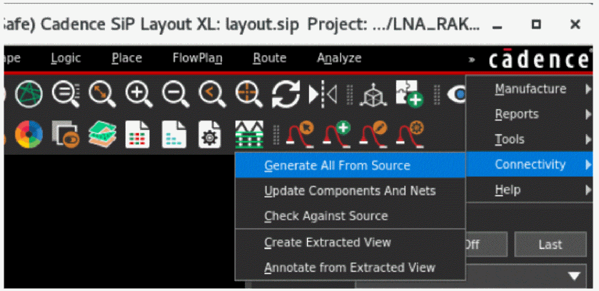
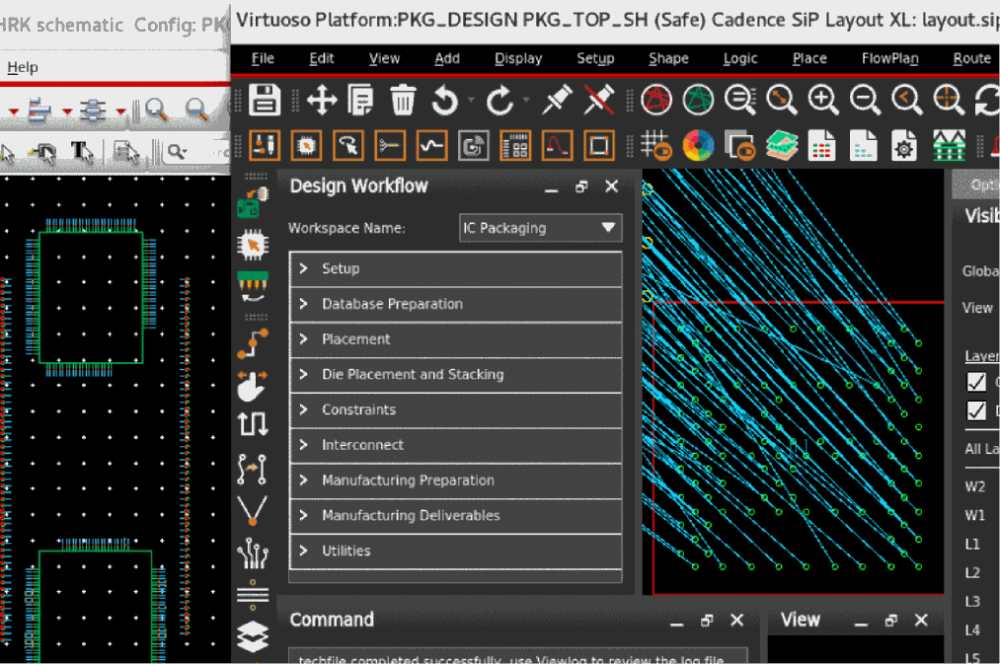

Generating a SiP Layout from a Source Schematic
This topic lists the steps to generate a SiP layout from a package schematic in Virtuoso. You can use the Connectivity menu available in the SiP layout to create the physical layout in SiP. The capabilities include cross-selecting components in the schematic and highlighting them in the layout and vice versa.
-
Choose Connectivity – Generate All from Source.
 -
Click various instances in Virtuoso Schematic Editor and see how the corresponding symbol in Cadence SiP Layout is zoomed-in, selected, and highlighted.

You can use the Scribe Lines feature that shows the physical extents of the actual manufactured die. This includes the scribe area outside the design extents that is part of the wafer scribe or sawing process.
Related Topics
Creating a SiP Layout from a Package Schematic
Checking Against Source Schematic
Return to top